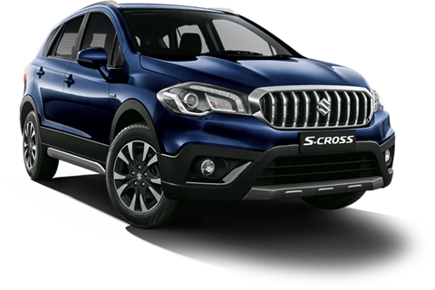

The Maruti S-Cross has 1 Petrol Engine on offer. The Petrol engine is 1462 cc . It is available with Manual & Automatic transmission.Depending upon the variant and fuel type the S-Cross has a mileage of 18.43 to 18.55 kmpl . The S-Cross is a 5 seater 4 cylinder car and has length of 4300, width of 1785 and a wheelbase of 2600.
-Some key specifications:
City mileage: 18.43 kmpl
Engine Displacement:1462
Max Power:103.26bhp@6000rpm
Seating Capacity: 5
Fuel Type:Petrol
Transmission Type: Automatic
Boot Space: 375
Service Cost: (5 years) Rs 24,375
No. of cylinder: 4
Max Torque (nm@rpm): 138nm@4400rpm
Fuel Tank Capacity: 48.0L
Ground Clearance Unladen: 180
Turbo Charged: Yes
Drive Type: 2WD
For more details you can visit the official website:
